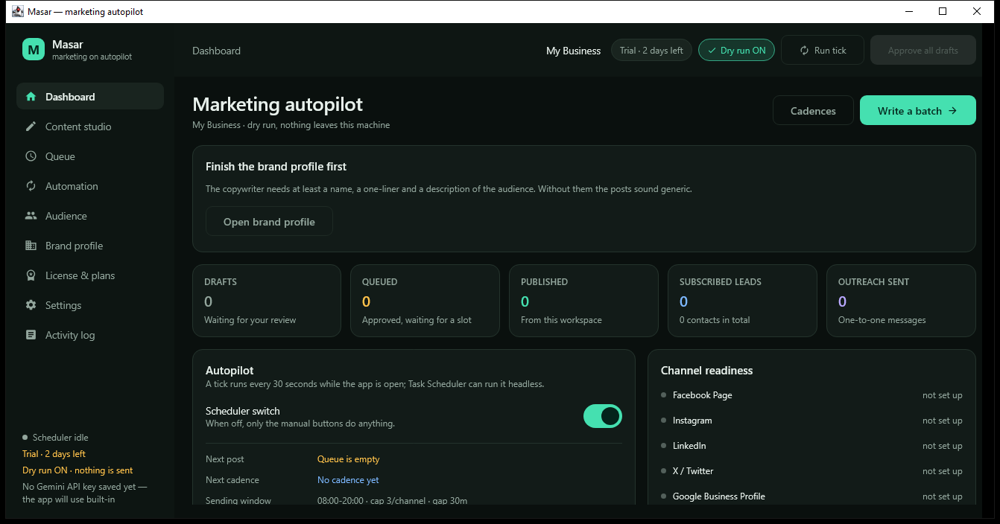

استوديو المحتوى
اختر القنوات ومحور المحتوى والموجز. احصل على نص متوافق مع العلامة، ووسوم، ودعوة لاتخاذ إجراء، وبطاقة تُرسم محليًا. ثمانية محاور، ونسخ متعددة، وقابلة للتعديل قبل إضافة أي شيء إلى القائمة.
يكتب MarketPilot منشورات التواصل، ويرسم التصاميم بهوية علامتك، ويحافظ على قائمة النشر، ويتولى التواصل المشروع — كل ذلك من تطبيق ويندوز هادئ واحد. واجهات رسمية فقط، والتشغيل التجريبي يبقى مفعّلًا حتى تقرر غير ذلك.

لوحة التحكم: الجاهزية، قائمة اليوم، القنوات، والنشاط الأخير.
ثماني شاشات تغطي روتين الأسبوع كاملًا: أنشئ المحتوى، وحدّد وقت نشره، وراقب القنوات، وتحدّث إلى جمهورك دون خرق القواعد.
اختر القنوات ومحور المحتوى والموجز. احصل على نص متوافق مع العلامة، ووسوم، ودعوة لاتخاذ إجراء، وبطاقة تُرسم محليًا. ثمانية محاور، ونسخ متعددة، وقابلة للتعديل قبل إضافة أي شيء إلى القائمة.
كل شيء في قائمة واحدة بحالته ووقته ومحاولاته وأدوات النشر. تمنع الضوابط أي عنصر يتجاوز الحد أو يخرج عن نافذة الإرسال.
قل «الاثنين/الأربعاء/الجمعة الساعة 09:00، نصيحة، فيسبوك وإنستغرام» مرة واحدة. يكتب المجدول ويرسم ثم يحفظ كمسودة أو يعتمد كل دفعة. الاعتماد التلقائي اختياري.
استورد ملف CSV بجهات اتصالك، وراجع كل عميل محتمل، واكتب رسائل بريد أو واتساب مخصصة، واعتمدها واحدة واحدة. يُفحص الحظر قبل كل إرسال.
احتفظ بعدة علامات في مساحة عمل واحدة بملفات وألوان ونوافذ إرسال وضوابط منفصلة. بدّل التطبيق كله من الشريط العلوي.
يُسجّل كل نشر وإرسال وتعليق وفشل مع استجابة الواجهة بلغة واضحة. وعند انتهاء صلاحية رمز، يخبرك السجل أي رمز ولماذا.
كل خطوة ظاهرة وقابلة للتعديل. لا شيء ينتقل مباشرة من رد الذكاء الاصطناعي إلى جمهورك.
تفترض أدوات التسويق عادةً أنك تريد أقصى وصول فورًا. يفترض MarketPilot العكس: تريد قراءة الناتج أولًا، وتريد سجلًا واضحًا لما خرج من الجهاز.
SIMULATED ولا يُرفع شيء.اربط ما تستخدمه فعلًا. تعرض لوحة التحكم القنوات المهيأة فقط، واليدوي متاح دائمًا للأماكن التي لا توفر واجهة ذاتية.
صفحات فيسبوك، وإنستغرام للأعمال، ولينكدإن (شخصي أو مؤسسي)، وX، وGoogle Business Profile للتحديثات والعروض المحلية.
البريد عبر أي مزوّد SMTP، مع ترويسات إلغاء الاشتراك وقائمة حظر. وWhatsApp Cloud API بقوالب تسويقية معتمدة.
تحصل تيك توك وReels والقصص على حزمة كاملة في الصادر: التعليق، والصورة، وبيانات المنشور، وفيديو عمودي اختياري مدته 8 ثوانٍ يُرسم باستخدام FFmpeg.
الإصدار 1.0.0، مبني لويندوز 64 بت. نزّل مثبّت EXE، أو استخدم MSI للنشر المُدار، أو احتفظ بالمجلد المحمول على قرص. لا حاجة إلى JDK.
انقر نقرًا مزدوجًا للتثبيت للمستخدم الحالي، وإضافة اختصار في قائمة ابدأ، وتسجيل أداة إزالة.
c2cfd3f339929ffe336ece38bd49193ca524159e772c236ef67aaf9b47137c4c
مجلد مستقل ببيئة تشغيله. استخرجه وشغّل
MarketPilot\MarketPilot.exe.
7d3e285f6017caac320d96ee79727566ed49be6cccbaa3d3dc178b6d992fb7c5
المثبّت نفسه بصيغة MSI للنشر البرمجي أو المُدار.
704de36c21336839f6f85e6ef43d3b603dff68899840be2c454cc384474b998e
البنية غير موقّعة، لذا قد يطلب Windows SmartScreen تأكيدًا. تحقّق من SHA-256 قبل تشغيل أي ملف.
لا، ليس عند التثبيت الجديد. التشغيل التجريبي مفعّل، لذا تُحاكى
عمليات النشر والإرسال وتُعلَّم SIMULATED. قفل الموافقة مفعّل أيضًا، لذا
يُتجاهل الاعتماد التلقائي للإيقاعات حتى توقفه. يمكنك تخفيف الاثنين، لكن عليك فعل ذلك
عن قصد.
لا. بدون مفتاح ذكاء اصطناعي يستخدم التطبيق قوالب حتمية، ولا تحتاج قناة «اليدوي» إلى أي بيانات اعتماد. أضف مفتاح Gemini أو OpenAI أو OpenCode عندما تريد نصوصًا مخصصة لكل علامة وجهة اتصال.
نعم. أضف علامة لكل نشاط في مساحة العمل نفسها، أو ثبّت نسخة ثانية تحت مستخدم ويندوز آخر. تُخزَّن بيانات اعتماد القنوات لكل تثبيت، لا لكل علامة، لذا لا ينبغي أن يتشارك عملاء غير مرتبطين تثبيتًا واحدًا.
لا. كل موصل يستخدم واجهة رسمية، وكل حملة تواصل تتطلب منك تأكيد أساس قانوني. لا توجد سلاسل تلقائية ولا متابعات آلية — جهة اتصال واحدة لكل حملة، بحكم التصميم.
ابدأ في التشغيل التجريبي، وأنشئ بعض المسودات، وانتقل إلى المباشر فقط عندما يشبه الصوت صوتك.